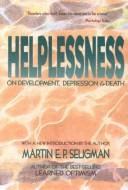

Helplessness: On Depression, Development, and Death
Book·Martin E. P. Seligman, 1975·习得性无助

Seligman summarizes how inescapable shocks lead animals and people to give up trying, and links this to depression.
- Author
- Martin E. P. Seligman
- Year
- 1975
- Difficulty
- Intermediate
- Kind
- Primary text
- Schools
- Learned Helplessness
- Core theories
- Learned Helplessness Revised, Explanatory Style (Reformulation)
Editions
- Chinese edition 《习得性无助》 【美】马丁·塞利格曼（Martin E.P. Seligman) · tr. 李倩 · 中国人民大学出版社 · 2020 Douban 8.7 (532 ratings) Douban page ↗
- English edition Helplessness: On Depression, Development, and Death Martin E. P. Seligman · Updated edition, W. H. Freeman · 1992 Open Library ↗